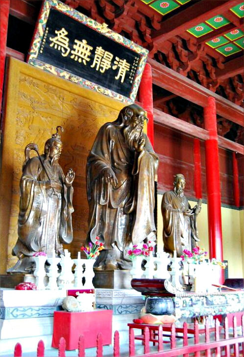
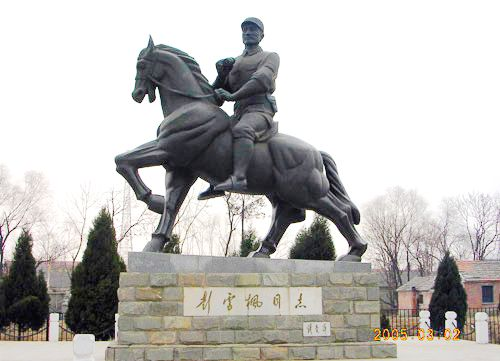
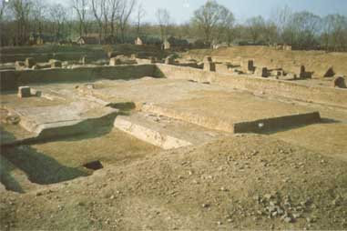
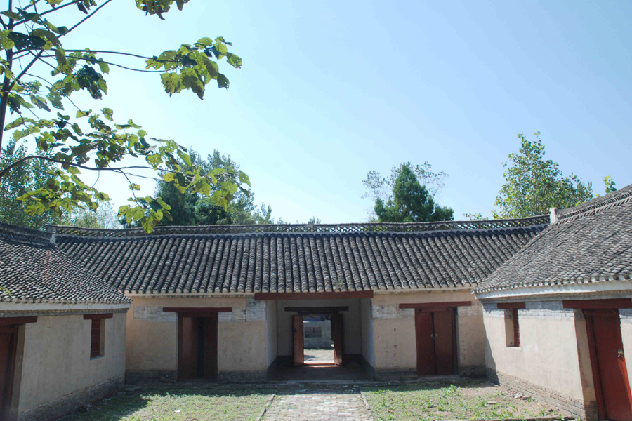
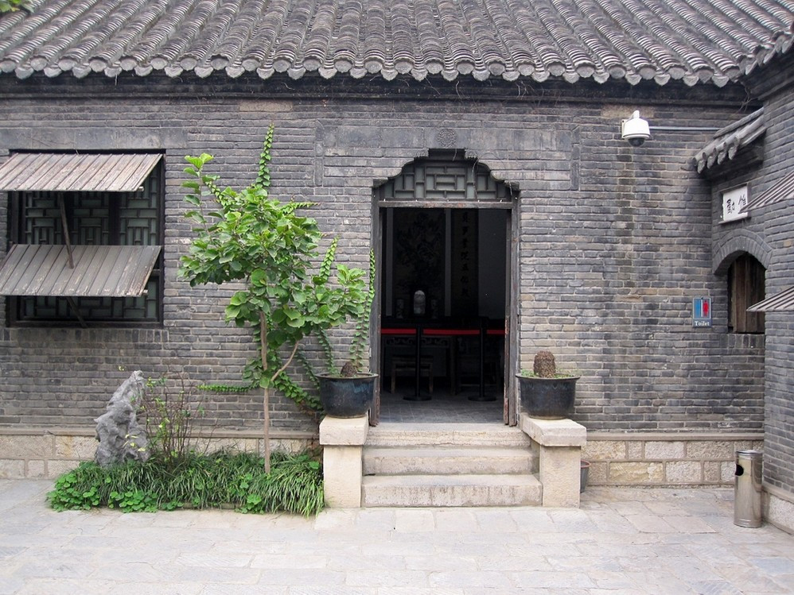
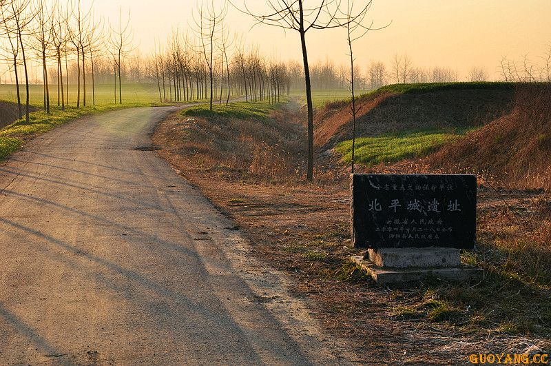
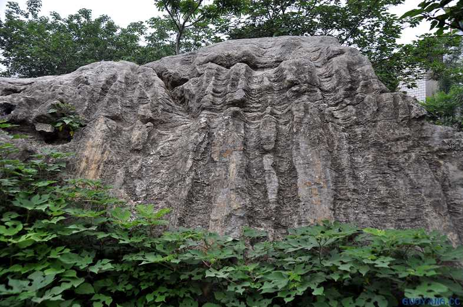

景点名片
天静宫
等级：国家AAA级旅游景区
坐落于安徽省涡阳县涡北街道郑店村，距县城中心五公里。南临涡河，三面环绕武家河，北枕龙山之峰，可谓抚山枕水之地，钟灵毓秀之乡。天静宫是供奉老子的地方，故今人称其为“老子庙”。明成祖朱棣曾在此养兵，未发迹时给老子许下愿，后成功登基称帝，依愿扩大重修了天静宫，使天静宫达到历史上最辉煌时期,后逐渐败落。
为了纪念一代哲人老子，弘扬道教文化，抢救和恢复中华民族的优秀文化遗产，扩大与世界文化交流，在港、澳、台和海外重德尊道人士的鼎力赞助下着手修复天静宫，于老子则为纪念圣地，于道学则为研究中心，于道教则为道教祖庭。经过数年努力，老君殿、三清殿、灵观殿、天师殿、重阳殿、财神殿、元辰殿、老祖殿、慈航殿、吕祖殿、东岳庙等十余座殿堂己相继展开和完成，天静宫又复屹于古相大地，重现昔日风采。天静宫建筑群是主体标志性建筑，目前已完成了老君殿、道观中轴线上的灵观殿、三清庙等殿堂的建筑。老君殿是天静宫的主殿，按照到焦祖庭的规模及宋代规制修复，九脊重檐，东西长47米，南北深28米，殿高23.75米，立于2米高的崇台上，堪称道观第一殿。殿内屹立老子、尹喜、东华帝君三尊青铜像，其中老子像高5.5米，重6000千克，目前为国室内最大的老子铜像，堪称中华第一。九龙井是天静宫建筑群中的又一主要景观，现已探明九龙井位于天静宫围墙的东侧，其中一口井经考古鉴定，系春秋时期的“瓦圈井”，如今已修建了井亭，加以保护，九龙井堪称中华第一。
天静宫景区是涡阳县国家3A级旅游景区，气势辉煌，堪称华夏道观之首的天静宫2008年拟上马三期工程，三期工程重点建设内容主要是修建九口井，恢复古流星园，再现古时的情景。天静宫按照国家AAAA级旅游景区的标准，不断完善各项基础设施，提升服务功能，不久，天静宫将成为亳州市、安徽省乃至全国的著名旅游胜地。
新四军第四师纪念馆
等级：国家AA级旅游景区
涡阳县新四军第四师纪念馆坐落于涡阳县新兴集，距县城20公里，北与河南省永城市接壤，是安徽省重点文物保护单位、省国防教育基地、省青少年爱国主义教育基地、亳州市爱国主义教育基地，是全国十九个抗日民主根据地之一 ,国家AA级旅游景区。
新四军第四师纪念馆原为新四军四师司令部旧址，1994年5月2日，中央军委副主席、原新四军第四师参谋长张震来新兴集故地凭吊，命名并题写了“新四军第四师纪念馆”馆名。四师司令部旧址为砖木结构的四合院，分东西俩个院子，有房34间，现已辟为新四军第四师纪念馆，原军委副主席张震为纪念馆题写了馆名。纪念馆内有刘少奇、彭雪枫旧居，彭雪枫德政碑，还陈列有各种图片和革命文物等。1981年被省政府公布为省级重点文物保护单位。
近年来，为建好新四军第师纪念馆这一爱国主义教育基地，涡阳县委、县政府以及新兴镇党委、政府多方筹措资金，现已完成了长期发展规划的编制工作，目前在积极扩大纪念馆面积，充实展览内容，完善服务设施，增加景区内涵，提高接待水平，力争把新四军第四师纪念馆打造成国家AAA-AAAA级旅游景区，让这一红色旅游经典景区成为安徽省一道靓丽的风景区，让彭雪枫将军的光辉业绩和新四军的优良传统永远昭示后人。
老君殿遗址
等级：安徽省重点文物保护单位
位于涡阳县太清宫（又称天静宫）院内东岳庙西侧。为发展旅游事业，在择址重修太清宫老君殿前，对老君殿遗址进行文物发掘和地下文化层清理。省文物考古所的近十名专家，历时58天，揭露面积3700平米，发掘深度达1.8~2.4米。发现宋至明清时期的建筑基址十余座和几段汉砖，唐砖砌体及井、灶、窑，小路等其它遗迹，出土了汉至明清时代的各类文物及建筑构件上千件，取得了重要的成果。其中宋代老君殿基址较为完整，殿基呈繁写的“亚”字形，坐北朝南，东西30.30米，南北14.50米，系高台建筑。台基下四周有宽0.8米的砖铺散水，南面正门下有台阶，阶下有砖铺台明，均为宋砖砌筑，并有“祥符元宝”铜钱压基，为宋真宗时期的建筑物。特别带有“混元降口”字样的碑石残牌出土，与宋大中祥符年（1914年）宋贞宗册封老子为“太上老君混元上德皇帝”的史载相符，这对研究老子生平及认定老子故里在涡阳提供了有力的佐证。
“宋代老君殿遗址”的发现、发掘成功，具有重要的历史和研究价值，尤其对涡阳是老子故里的确认，起到了补史和证史的作用。宋代老君殿遗址，对研究中国古代建筑史，特别是对古代道观的研究，具有重要学术价值。专家认为，该址规模宏大，等级之高在我国尚属首次，是个重要的考古发现，在全国的道观建筑中也比较罕见，它真实地反映了昔日太清宫的盛况和辉煌。同时，也为中国古代历史的研究，保存了一份极有价值的实物教材。
张乐行故居
等级：安徽省重点文物保护单位
位于涡阳县城西北张老家村，张乐行1810年诞生于此；在早期结捻活动中，张乐行常与龚德树、苏天福等人在家中聚会议事，计划如何起义抗清。张乐行故居属清式四合院，松柏掩映，有合瓦瓦房16间，其中前排堂层5间，后客厅5间，东西厢房各3间。客厅重梁起架，雕梁画栋，明柱走廊，花格门窗，建筑雄伟。
捻军会盟旧址
等级：安徽省重点文物保护单位
位于涡阳县西关“山西会馆”院内。咸丰二年（1852年）张乐行等各路捻军聚集在山西会馆会盟，公推张乐行为盟主，进行武装抗清起义。 捻军会盟旧址之山西会馆，是山西商人集资所建，整体建筑雄伟。大门面向南，前后3排房屋，两进院落。大门两旁有石狮一对，门上石质匾额横刻“山西会馆”四字。二道大门两旁有石鼓一对，穿中堂可达后院；后殿5间，砖木结构，上覆五色琉璃瓦；大殿前置一铜香炉，捻军结盟时在此焚香立誓，祭告天地。旧房屋在清军剿捻时多次遭到破坏。1938年又遭日军轰炸，解放初期，仅剩有石刻匾额和石碑各一块，石狮子和石鼓各一对。1962年，安徽省人民委员会拨款在旧址重建房屋5间，作为捻军会盟起义纪念建筑。
北平城遗址
等级：安徽省重点文物保护单位
位于涡阳县曹市镇北6华里，是汉朝“山桑城”故址，《水经注》、刘志存《涡阳县志》等均有记载。又因该城址土呈红色，当地人称“红城子”。该城始建于春秋，时名垂惠聚。东汉末年，文武过人的文钦被封山桑侯于此，所居之处俗称北平城。《水经注》记载：“北淝水东南流山桑邑南，俗谓之北平城。”《寰宇记》载：“北平城在临涣县西南四十五里。”
北平城迄今城址尚存，呈方形，长宽均五百米，面积四百亩。城墙高出地表二米以上，最高处三点七五米。城厚五米，现在墙脚宽十五米。原城墙四角建有戍楼，东西有二门，门宽七米。城外有护城河，距城墙三十米，河宽十五米，深三点五米。内城地势较高，俗名“小城墙”。北面城墙残高1.5米余，一地势较高处，被当地群众称为“金銮殿”。 文物专家称，如此清晰可辨的城郭在安徽并不多见。
陈抟卧迹
位于涡阳县石弓镇小山子窝之西岸，有方大凸石，东高西低，稍倾斜，上有巨人仰卧所压之痕，首颈、躯干、四肢清晰分明，旁有马狂躁时踢趴之蹄迹，一切惟妙惟肖，穷形尽相。传说此痕为陈抟卧息压成。五代宋初人陈抟，不图仕进，曾在华山修道，称“华山处士”，著有道德经《指元篇》等，宋太祖赐号“希夷先生”。相传陈抟晚年游历祖国山川时，在此地休息过。